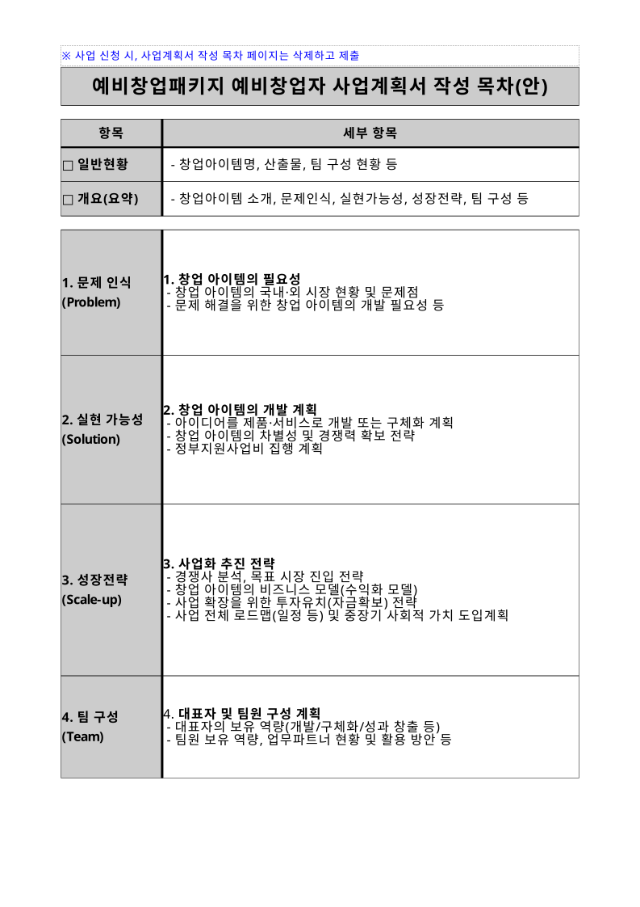

"사업 개요 표 채워줘"
✦
표 채우기 제안
s0·b3 ⊙ 위치 보기
빈 값칸 6곳을 채웠습니다 — 라벨은 건드리지 않았어요. 적용할까요?
✓ 적용
되돌리기
AUTO-HWP
· SELF-OWNED HWP ENGINE
오토한글
AI와 함께, 한 화면을 보면서 쓰는 한글
AI가
읽는 문서
와
화면에 그려지는 문서
가 같은 엔진에서 나옵니다 —
그래서 말로 고친 편집이 검증되고, 한글에서 그대로 열립니다.
한컴 쪽수 일치 8==8 · 18==18
줄바꿈 98.9%
실물 공공문서 49종
100% 로컬 · 7.3MB wasm